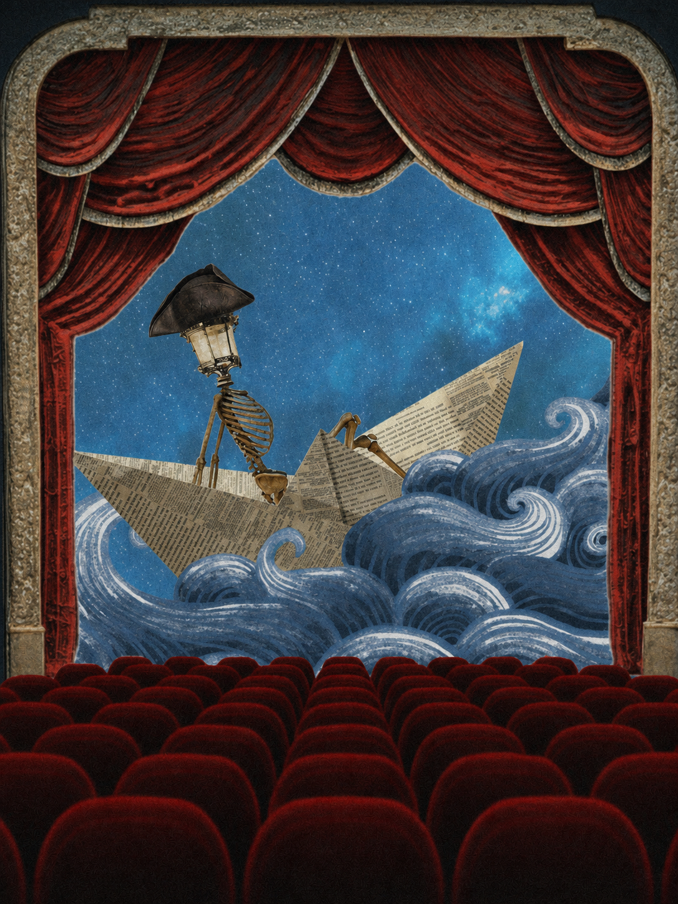
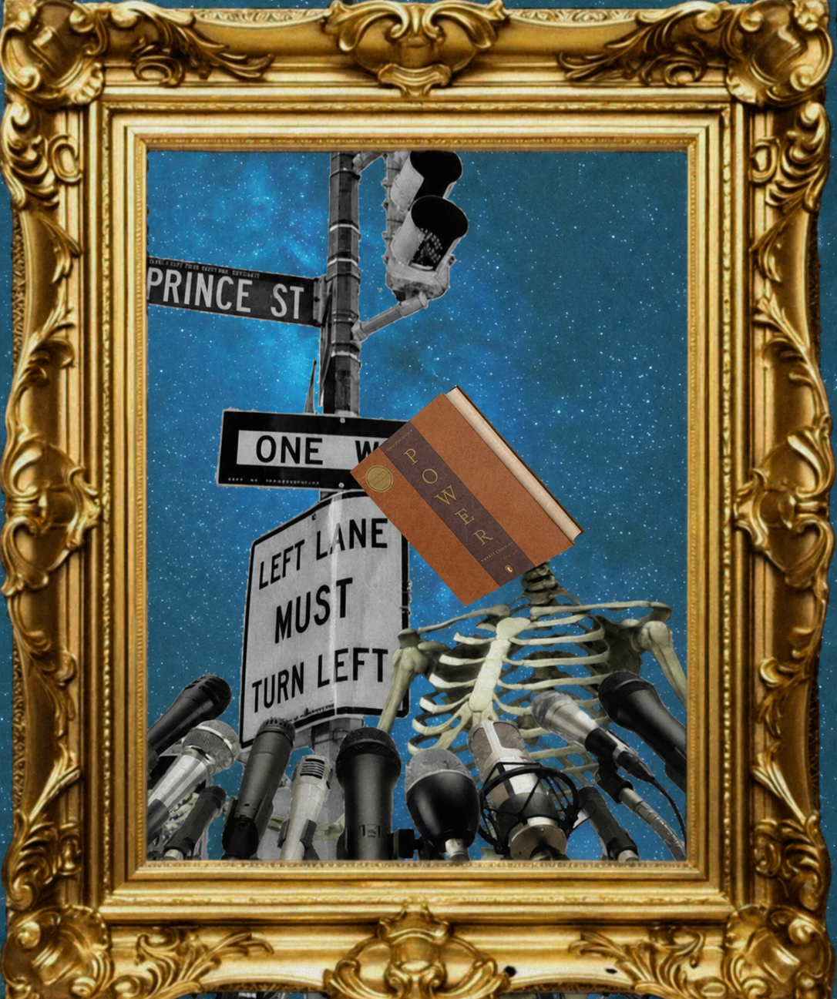

Editorial Art
Image composites created in Photoshop that has a wide arrange of images selected Google Images, Adobe Stock, and Pinterest.

Editorial Project One
This composite made in Photoshop tells the story of a skeleton traveling the seas to find where it could find a place called home. The lamp in place of the head represents its ambition of going to the location from its bright light. The theater represents us at the viewer looking at this depiction.

Editorial Project Two
For this composite, I had a skeleton taking in the microphones as though they have meticulously thought out what they were going to say from the choice of book I have given them in place of a head.